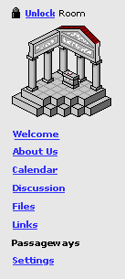

Passageways available from a room
The owner of a room can add links from that room to other rooms in TAPPED IN.
These links are called "passageways". The purpose of a passageway
is to provide a mechanism for informal, directional connections to related rooms
based on whatever criteria the owner of a room considers salient. Passageways
will allow both the room owner and room visitors to quickly transport to other
rooms that are related to the current room and hence likely related to their
interests. Besides being useful in a practical sense (users will be able to
quickly move through a series of relevant rooms and discover items relevant
to their interests), passageways will also provide interesting research data
in that they will reflect an informal social network constructed by members
of TAPPEDIN.
Using Passageways
The list of passageways that an owner has created from a given room is available
under the Passageways link in the left menu bar of each room, as shown below.
[1] Passageways are associated with a room, and hence accessible only through
the passageways link, which exists for each an every room type (individual rooms,
group rooms, and course rooms). [1]
|  |
Passageways
out of this room
 |
TAPPED
IN Reception. (10 people) Welcome
to reception. HelpDesk staff members are here during working hours
to answer your questions. (TAPPED IN : BJ_Berquist) |
| |
Mark's
Office. (1 person) Welcome to my
office! I'm the project director for TAPPED IN. (Mark_Schlager) |
| |
Judi's
Office. (2 people) Welcome, and
feel free to ask me questions about the community. (Judi_Fusco)
|
|
NCMSC
Room. (8 people) The North Central
Mathematics and Science Consortium (NCMSC) works to advance systemic
change in mathematics anc science. (NCMSC : Jeff_Smith) |
= Featured
Item
Passageways
into this room
Mark's
Office. (1 person) Welcome to my office!
I'm the project director for TAPPED IN. (Mark_Schlager)
|
By clicking on Passageways, a visitor will see a list of passageways
out of this room [1], as well as passageways into this room[2]. If a user clicks
a link to a room under Passageways, they will be transported to the room. [1]
Door icons are shown beside room names to reinforce that they are links to
and from rooms. Also shown for each room is the number of people currently in
the room [2], a description of that room (as set by the owner of the other room)
[2], and the room owner (including tenant, if applicable, in the format Tenant:
owner)[2].
Passageways out of a room can also be "featured."[2] Featured passageways
are highlighted and appear on the Featured Items list on the Welcome page.[2]
We might also make the owner name clickable, so the user can get more information
on that member [2]. However, this does add more "noise" to the page
and may be a distraction; it may be better to have the main focus / main link
be to the room.
To return to a room they just came from, a user could go to Passageways list
for the room they just went to, look under "Passageways into this room"
for that room, and click on the name of the room that brought them here [2].
In this way, users can navigate in both directions, even though passageways
are not symmetric. Alternately, a user can always navigate to any room by using
search, by browsing locations, or by their favorite places links.
Editing Passageways
By default, each room when created will contain one passageway[1]. This passageway
will lead out to the TAPPED IN Reception.The owner of a room can create up to
20 passageway out of their room, and delete any or all passageways out of their
room[1]. A passageway can be created to any public individual, group, or course
room in TAPPED IN. The room owner cannot create or delete passageways
into his/her room.
When the owner of a room clicks on the Passageways link, they see an interface
similar to what a vistor would see, except they also see delete links [1] beside
each passageway, as well as two buttons: add passageway [1] and put checked
items in your featured items [2].
To delete a passageway, the owner just clicks on the delete link beside the
passageway. The owner is presented with a confirmation message before the deletion
is done, for example:
Are you sure you want to delete the Passageway from here to TAPPED IN Reception?
Yes Cancel
If the user selects Cancel the passageway is not deleted; if the user selects
Yes the passageway is deleted.
To add a passageway, the owner clicks the add passageway button .The owner
can add new passageways up to a limit of 20 passageways. When 20 passageways
out of the room exist, the add passageway link no longer appears. In its place,
a message appears that says:
No more than 20 passageways can lead out of a room.
When a room owner adds a passageway, she is presented with a search field into
which she can type the name of a room, and press the Find It button. [1]
|
Enter
all or part of the name of a room that you want to link to in your passageways.
A list of matches will be presented, from which you can select one or more
rooms to link to.
|
Rooms that match the keywords that she entered will be displayed, and she can
select one or more rooms from the list. [1] Also noted are matches that are
already in the passageways list for that room. [2]
|
Enter
all or part of the name of a room that you want to link to in your passageways.
A list of matches will be presented, from which you can select one or more
rooms to link to.
Below are
the rooms that match your query. Select the rooms you want to link to
and press the Create Passageways to Checked Rooms button. If none of these
rooms are the room you are looking for, you can perform another search
above.
|
Once the owner selects one or more rooms, the room is added to her passageways
list, as shown below. [1]
Finally, each room has a Featured Items list that can be displayed in a sticky
note in the rooms Welcome page. Items that can be featured include files, links,
and passageways. To add passageways to the Featured Items list, the owner checks
the files she wants to add, and clicks the button put checked items in your
featured items. [2]
Notes
The passageways that a owner adds to a room also automatically appear under
their favorite places links under Me [2].
If a room is deleted, and that room is linked to under one or more Passageways,
that room is automatically removed from all passageways lists, and a private
message is sent to the room owner to notify them.[2]
Hierarchies/folders [3] may not supported in version 1.0.
Rearranging order [3] is not supported in version 1.0. Passageways are listed
in the order that they are added.